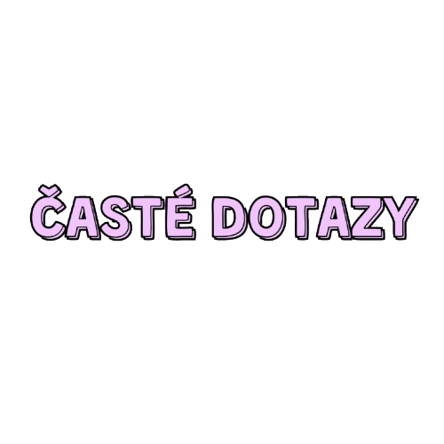

Časté dotazy
Vše, co se nás často ptáte.
Máte možnost jídla i pro vegany a bezlepkové hosty?
Ano. V nabídce máme několik vegetariánských a veganských variant, a pro bezlepkové hosty připravujeme i doplňky s jasně označenými možnostmi. V případě konkrétní alergie nebo intolerance se rádi poradíme s kuchyní.
Jaké jsou platební možnosti?
Při nákupu v kavárně přijímáme hotovost, kreditní a debetní karty a také mobilní platby. Vždy je možné zaplatit i bezkontaktně.
Mohu si zde pracovat na notebooku?
Jasně. V kavárně je příjemné prostředí pro práci, a proto máme pro hosty k dispozici stolky s dostatečným prostorem pro notebook. Doporučujeme však přijít v klidnějších hodinách, aby si užili pohodlí i ostatní návštěvníci.
Jak probíhá objednání v kavárně?
Postup je jednoduchý:
- Vyberte si z nabídky kávu nebo jídlo.
- Objednejte si na pultu nebo u stánku.
- Počkejte na vyzvednutí a pak si užijte čas v kavárně.
Jsou děti vítány?
Ano, dětem jsme rádi otevřeni. Nabízíme dětský nápoj Babyccino a u některých stolů je i prostor pro klidné posezení s dětmi. Pokud přijdete s kočárkem, klidně se po něm v kavárně pohybujte, abychom vám vyšli vstříc.
Máte i bezkofeinové nebo nealkoholické alternativy?
Ano, kromě klasické kávy nabízíme i bezkofeinové varianty, léčivé a bylinkové čaje, nealkoholické nápoje a domácí limonády. Na výběr máme i možnosti vhodné pro děti i hosty, kteří preferují neobsahující kafe.
Ceník kávy
| Kategorie | Nápoj | Cena |
|---|---|---|
| Káva | Espresso / Ristretto | 55 Kč |
| Káva | Espresso doppio | 65 Kč |
| Káva | Caffè lungo | 60 Kč |
| Káva | Cappuccino | 75 Kč |
| Káva | Flat white | 80 Kč |
| Káva | Caffè latte | 80 Kč |
| Káva | Babyccino | 35 Kč |
| Speciální kávy | Marocchino | 85 Kč |
| Speciální kávy | Bicerin | 95 Kč |
| Speciální kávy | Affogato | 90 Kč |
| Speciální kávy | Caffè corretto | 95 Kč |
| Speciální kávy | Vídeňská káva | 85 Kč |
| Speciální kávy | Alžírská káva | 95 Kč |
| Speciální kávy | Turecká káva | 65 Kč |
